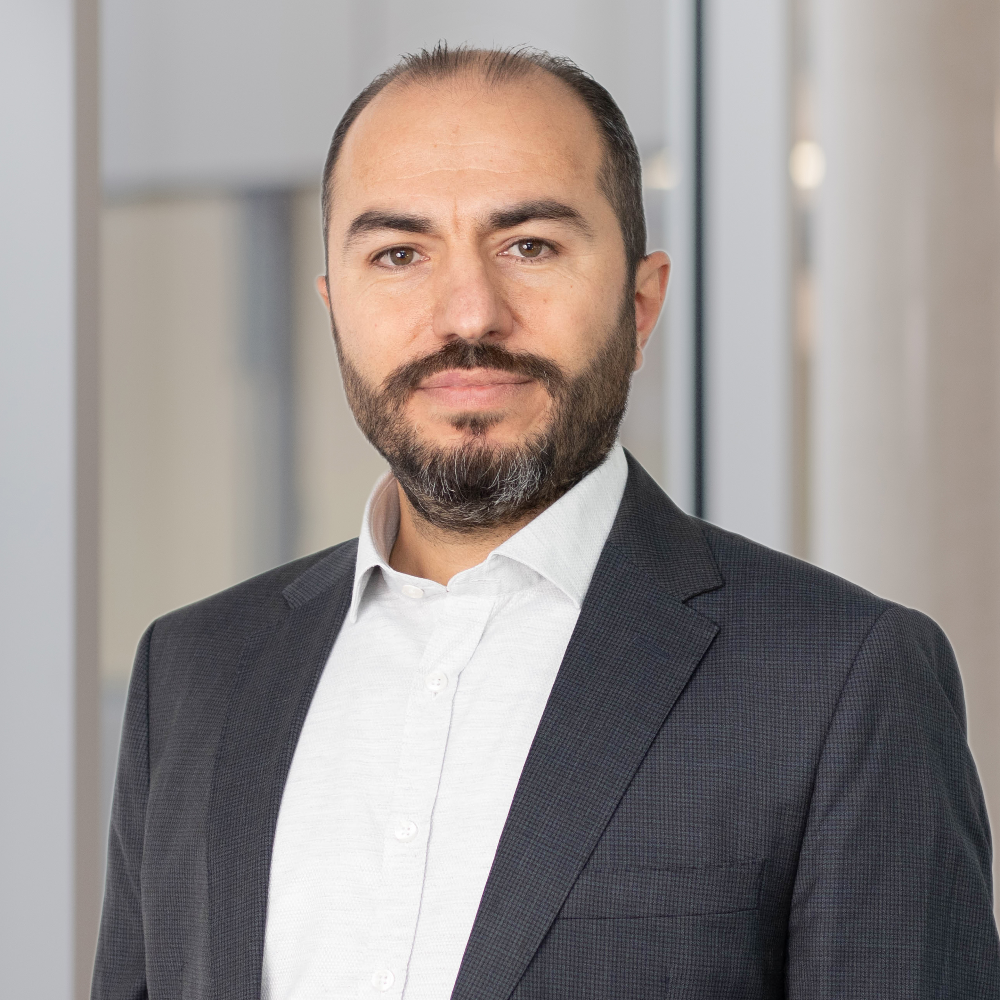

Cloud Altyapısı
AWS ve Azure üzerinde güvenli, ölçeklenebilir ve maliyet odaklı mimariler.
CLOUD & DEVOPS ENGINEER
Her proje için doğru uzmanları ve çözüm ortaklarını bir araya getiriyor; AWS ve Azure altyapıları, CI/CD, otomasyon, sistem ve ağ yönetimi alanlarında ihtiyaca özel çözümleri birlikte hayata geçiriyoruz.

Bilişim ve elektronik alanında lise eğitimiyle başlayan teknoloji yolculuğumu, Teknik Bilgisayar Mühendisliği eğitimiyle ileri taşıdım. Kariyerim boyunca yöneticilik, girişimcilik, sistem yönetimi ve IT destek alanlarında farklı sorumluluklar üstlendim.
Son yıllarda AWS, Azure, DevOps ve bulut otomasyonu alanlarında yeniden aktif teknik çalışmalara odaklanıyor; şimdi kendi ürünlerimi geliştiriyor ve freelance projeler üstleniyorum.
AWS ve Azure üzerinde güvenli, ölçeklenebilir ve maliyet odaklı mimariler.
Koddan üretime daha hızlı ve güvenilir teslimat için otomatik pipeline'lar.
Tekrarlanabilir kurulumlar, container orkestrasyonu ve Infrastructure as Code.
Linux ve Windows sistemleri, ağ cihazları, güvenlik ve kullanıcı yönetimi.
1st/2nd level destek, Microsoft 365, Intune, Entra ID ve cihaz yönetimi.
Bir altyapı sorununuz veya yeni bir projeniz mi var?
Konuşalım↗Şeffaf ve kullanıcı onaylı temizlik yaklaşımıyla geliştirilen, güvenlik odaklı macOS bakım uygulaması.
TidyLume'u incele↗İşletmelere özel, çok dilli ve mevcut sistemlerle entegre çalışan yapay zekâ asistanları. Almanya'da danışmanlık, ihtiyaç analizi, kurulum ve yerel destek sunuyorum.
Çözümleri keşfet↗YENİ BİR PROJE Mİ VAR?